← Zuruck →
GREENLAND
Arctic Circle Trail
[Kangerlussaq to Sisimut -- ~100 miles, 7-12 days in length]
Hiking trail north of the Arctic Circle!! Looks relatively undocumented, so will likely be similar to Hornstrandir in nature of being a 'freestyle' hiking trail, but has both a summer and winter hiking path (definitely summer haha) (no winter yet)... heads from some of the inner Greenlandic ice sheets to the west coast Atlantic ocean (specifically from the town of Kangerlussuaq to Sisimiut, about 102.5 miles)... if done during the summer there should be hardly any snow
Caution: apparently midgies and flies on this trail during the summer are enough to drive a person insane, be wary
https://expertvagabond.com/arctic-circle-trail-greenland/
https://arcticcircletrail.net/
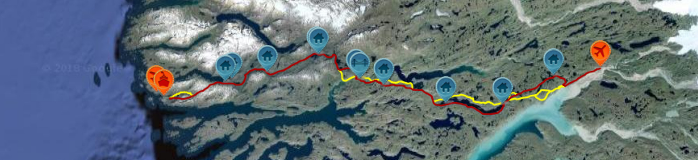 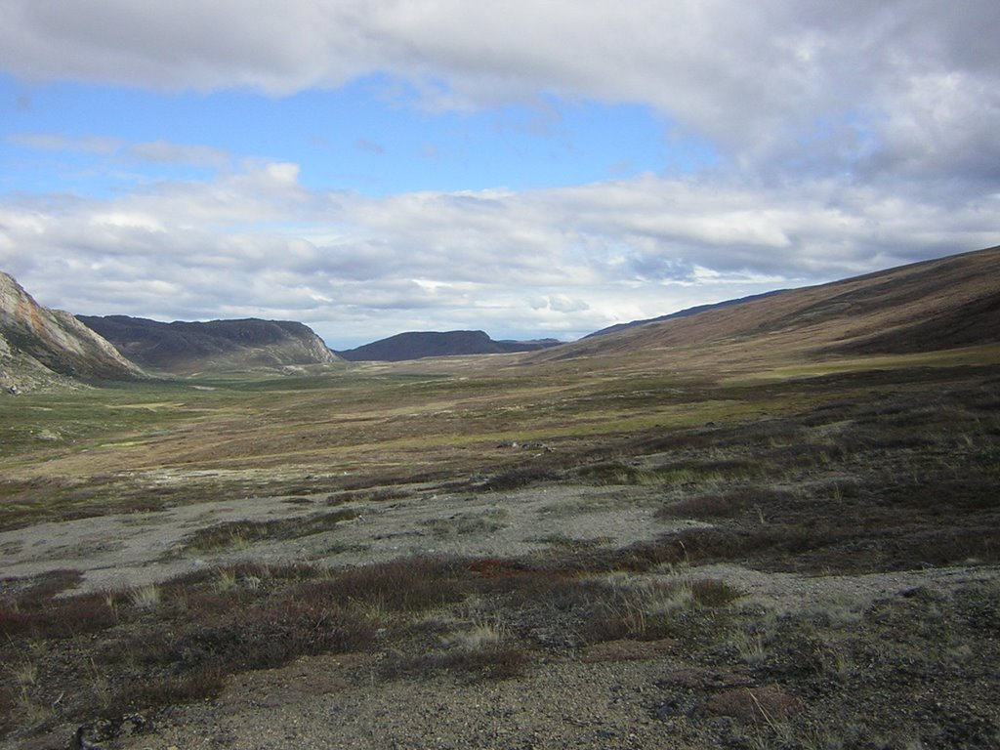 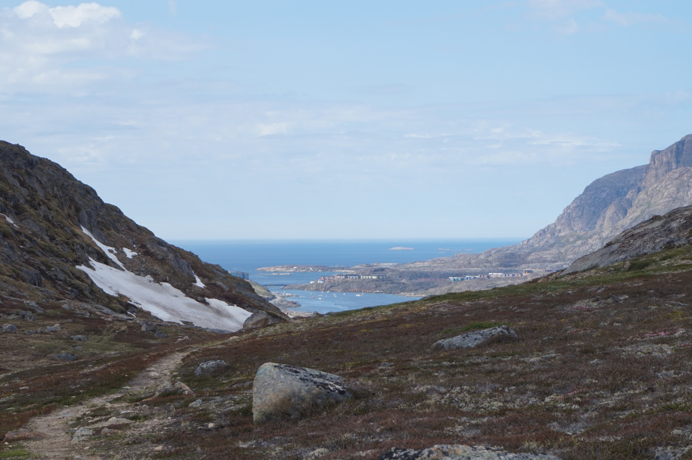 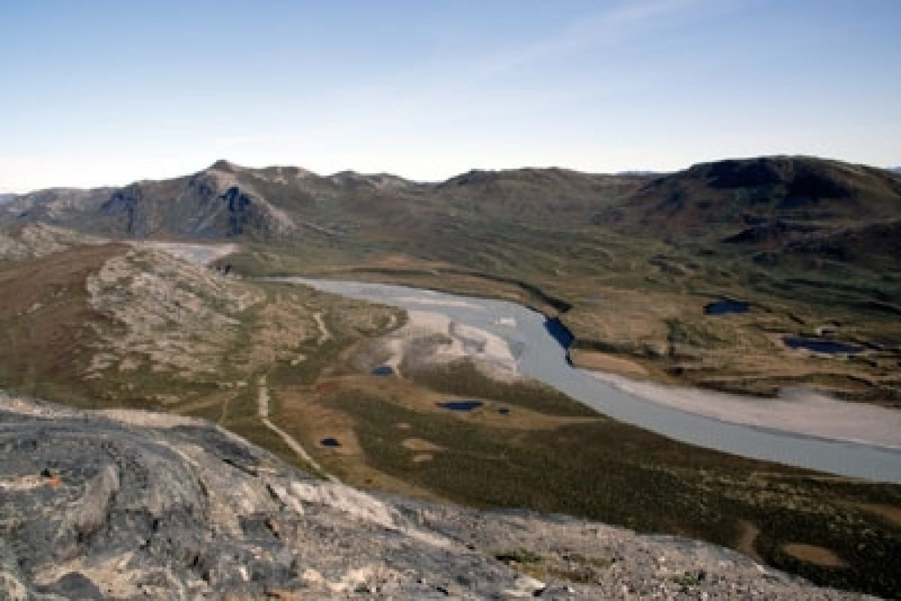
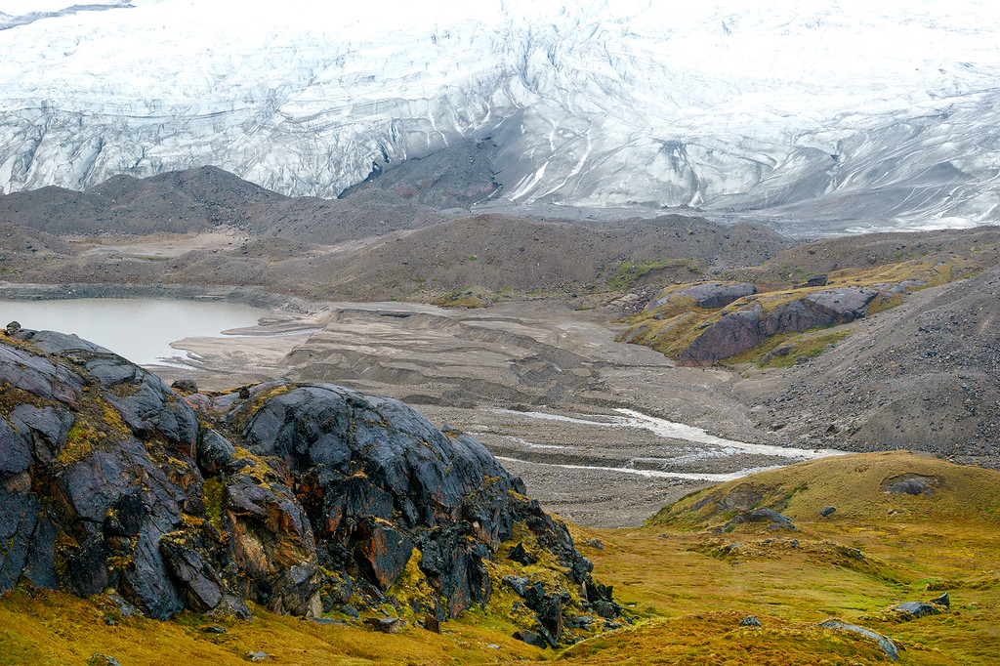
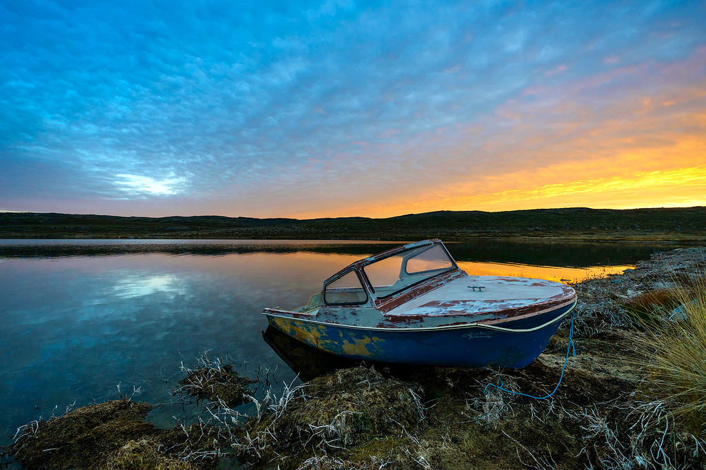
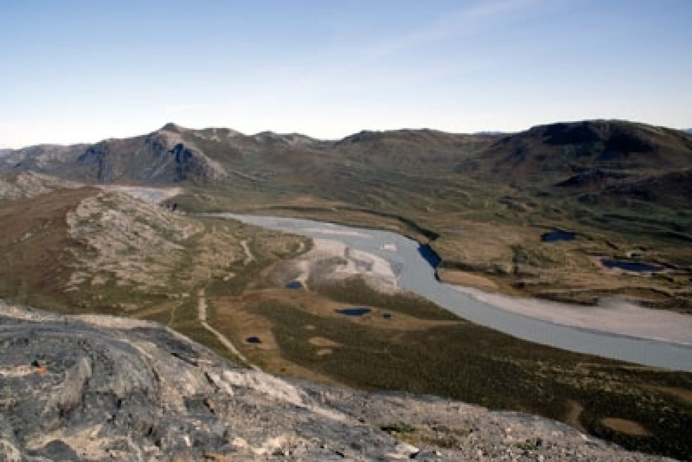
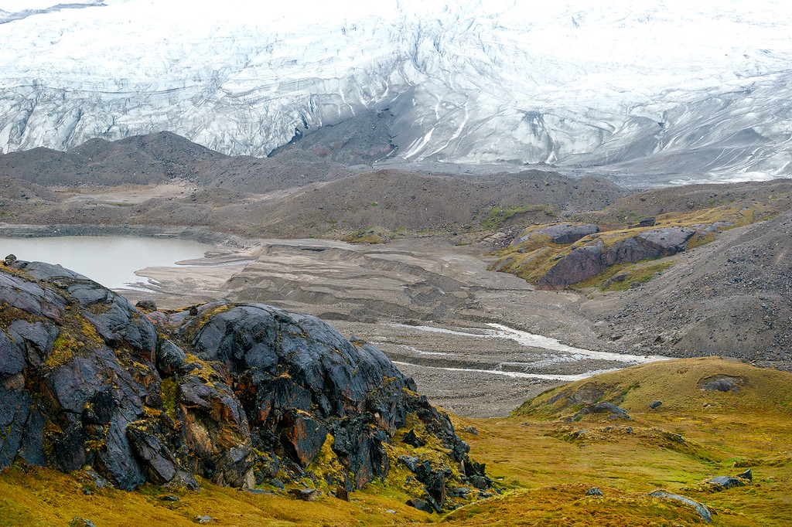
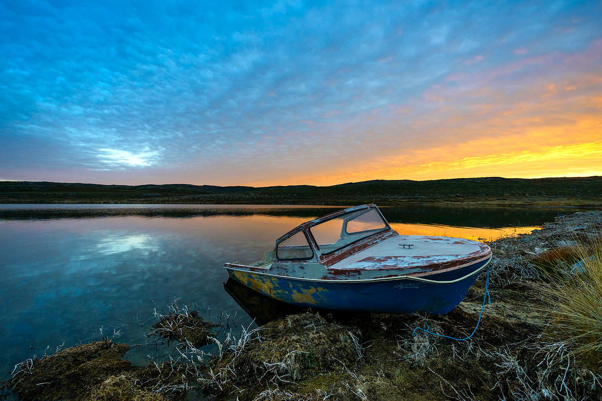
CANADA
The Great Divide Trail
[Continental Divide between Albera & BC, 1100 kilometers -- ~1 month]
This is a trail in the Canadian Rockies, on the Continental Divide between Alberta & British Columbia... self-proclaimed one of the most 'spectacular and challenging long-distance trails on the planet' (claim unverified so far :) )... the trail follows a similar concept to the European long-distance routes or the Oregon Coast trail, as it does not have a defined route, speficially. It certainly is however a very popular hike in Canada (okay, as far as long distance trails go), seems to be like Canada's PCT or AT. Plus. It looks gorgeous :)
http://www.greatdividetrail.com/
https://fordingriver.wordpress.com/
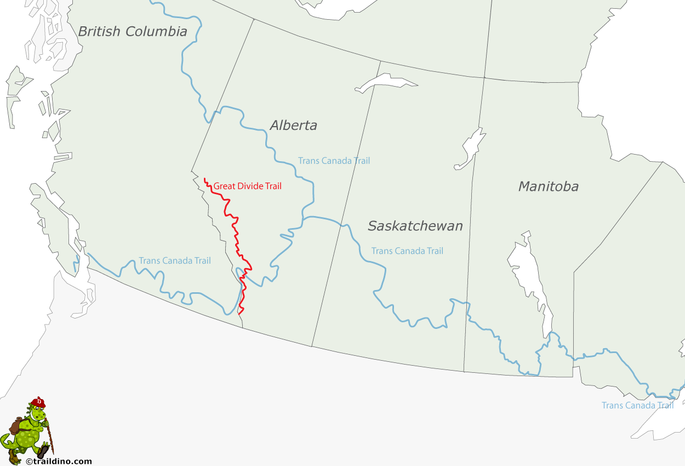 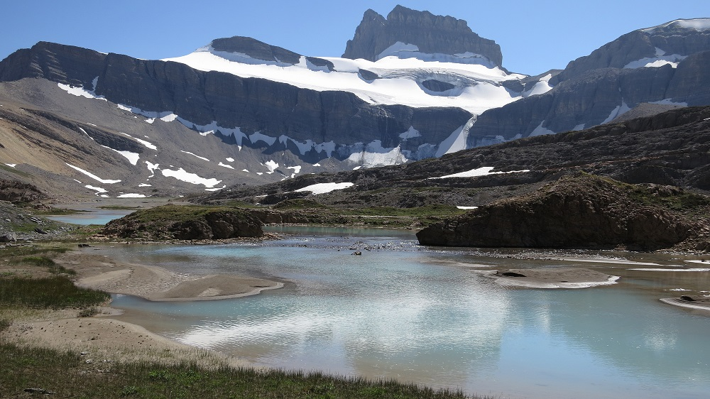 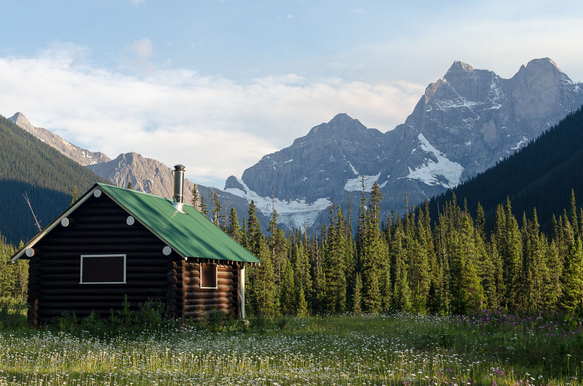 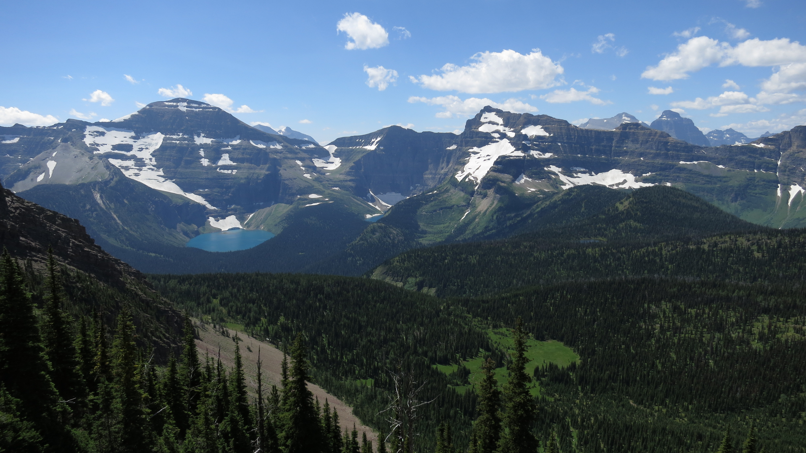 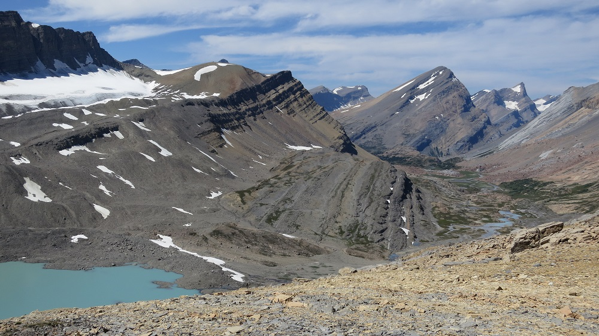 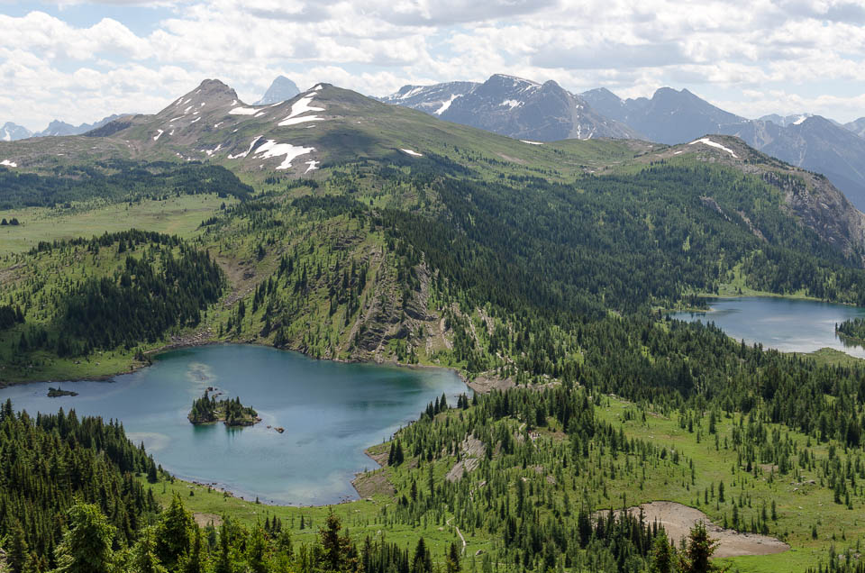 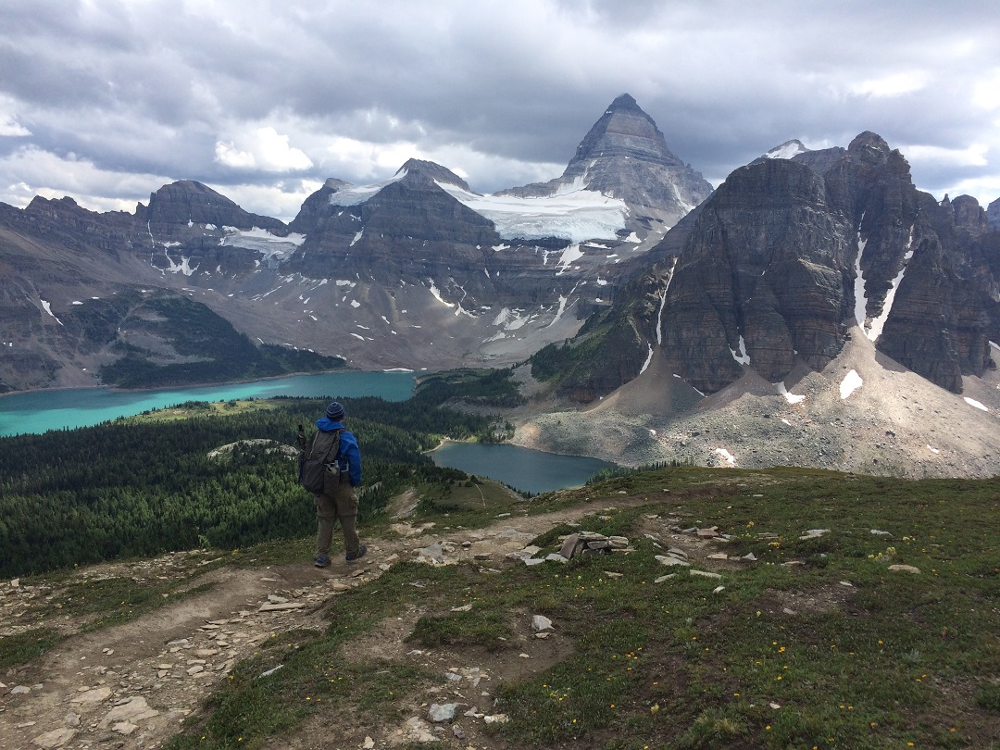UNITED STATES
Appalachaian Trail
[Eastern United States, through 14 states -- 2,190 miles -- 4-5 months]
Trail in the Eastern United States, generally in the New England region. Traverses 14 states, with 500,000 foot elevation loss and gain over the duration. Estimated 3 million visitors per year. Very well established route, so solitude might be more rare than other routes but. Obviously, it remains rather beautiful I daresay :)
https://fordingriver.wordpress.com/
Wonderland Trail :)
[Trail that circumnavigates Mount Rainier, 93 miles -- 7 days - 1 month ( ;) )]
Trail around the edge of Mount Rainier, and it's glaciers. Features very serious elevation gain and loss (a total of 23,000 ft), however being true to it's name, also features some of the most amazing sights one might see on this side of the US.. very good preparation to summit Mt. Rainier I think :)